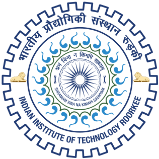
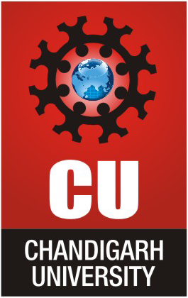

Education
Aug 2020 – Jul 2026

Indian Institute of Technology, RoorkeePhD, Water Resources Engineering
Roorkee, Uttarakhand, India · Advisor: Prof. Idhayachandhiran Ilampooranan
Thesis: Emerging Role of Small Inland Waterbodies in Storage Dynamics.
2018 – 2020
MTech, Environmental Engineering
Himachal Pradesh, India · Advisor: Dr. Chander Prakash
Thesis: Hydrodynamic Modeling of Glacial Lake Outburst Flood (GLOF) in Manalsu River and its Impact on Manali Town.
2013 – 2017

Chandigarh UniversityBE, Civil Engineering
Mohali, Punjab, India
 IIT Roorkee · Dept. of Water Resources Development and Management
IIT Roorkee · Dept. of Water Resources Development and Management